相对运动理论
- 广义相对论：相对幅度加速，表示在相同的时间，幅度更大，成为加速；
相对时间加速；相同的幅度，在更短的时间内完成，成为加速；相对反弹加速：前面反弹很大，后面反弹变小，
成为加速。如果相反，则走势会继续运动，不会反转，可以作为判断的依据。
- 利用相对论，要先判断大势，如果处于跌势，那么应该看拉回高点后，再次下跌的走势，
而拉回的速度可以比下跌的时候慢。这时拉回的幅度顶多比原来高点高一些，然后再次下跌。经常和原来的高点一样高。
而处于升势的时候，下跌的时候，和原来的起点一样低，或者稍微低，然后再次上涨，超过原来的高点。
- 要看回调后，走势的运动速度和回调的速度比例。但是回调的形状也非常的重要。必须是那种开始一开始就回调，然后变平，
然后加速运动才可以，如果一直是一个倾斜向上或者倾斜向下的样子，那么不是回调。而是继续走势。即使速度块也不算。
相对幅度理论
不同层级的相对运动混合运动
相对运动来判断走势转折
走平后运动不能算作加速运动，只会持续运动。
下跌后，倾斜向上，没有走平的时间,不能算加速
头部的相对运动速度预示着未来的走势
快速运动的时候，寻找顶部或者底部
非常弱的两段走势
很快跨越前面走平的点后，走平，未来一定会回来
快速拉回全部幅度的调整走势
快速运动后，拉回全部幅度，再缓慢运动，会大大超过原来的极点
开始运动快，然后走平很长时间，总的看运动很慢
没有积累的情况下，刚刚够用就反转
第二段下跌超过了第一段，但是没有立刻反转，而是经过另一个
加速才反转，新低并没有很低
运动的时候，反弹的幅度不同，造成了走势反转或者继续
快速创走势新高/新低后，立刻拉回，然后缓慢走出新高后走平反转
快速创走势新高/新低后，立刻拉回，然后缓慢走出新高后走平反转
TOP
这个走势关键在于，它已经处于反转状态，而这个走势只是处于反转状态后走出的形态。

图示：8：00快速下跌后，它的上涨速度更快。直接快速越过前面的高点。这说明大盘要反转。
但是它没有立刻反转。而是立刻回调。回调后，缓慢越过前面的高点，走平。这个其实就是一个加速走势。
前面到达高点后，立刻回调，而这个稍微超过高点后，没有回调，而是走平。而大盘已经处于反转状态。
所以会大跌。

图示：开盘后，连续下跌两个bar，说明处于跌势。6：35，快速反弹，但是没有新高，
它开始下跌。6：40开始的下跌，幅度很大，超过了开盘的下跌幅度。这样其实走势已经处于反转状态。
但是它立刻反弹，然后走低，走更低后，缓慢反弹。在低点的反弹速度远低于6：45反弹的速度。这个就是一个加速状态。
而前面已经出现了更大的两段走势。说明反转了。

图示：6:45开始的大涨，属于第二段。它超过了第一段。处于反转状态。
然后但是它立刻拉回，再次缓慢上涨。创新高。但是新高不是很大。它缓慢到了新高后，停留几分钟。然后大跌。
运动的时候，反弹的幅度不同，造成了走势反转或者继续
TOP

图示：1. 这个走势每次下跌，反弹都很大。7：40的反弹和8：20的反弹都是两段走势。形成了跨越。
9：20的反弹则不一样，它反弹后，没有形成两段走势，立刻就创了新低。这样就是一个加速的过程。
这说明了相对论在各种情况下的运用。
2. 9：40大盘创新低。其实速度很慢。似乎不符合快速下跌的规律。但是这个走势在前面的铺垫下，给人一种下跌无穷无尽的感觉。它一旦上涨，就
会想要做空它。这个都是前面铺垫的结果。而铺垫就是两段下跌走势。
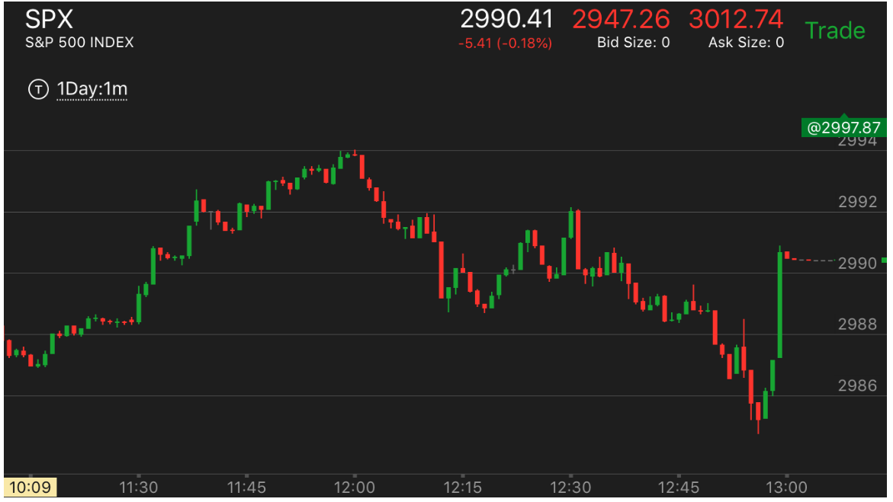
图示：11:30上涨幅度比较大，但是回调很小；11：40上涨幅度比11：30小，但是回调很大。
这样可以断定，它未来一定会继续上涨。这个第二浪相对的弱。说明还会继续。如果相反，那么就会反转。

图示：一开盘出现冲高大跌走势，它的跌速一开始就很大，然后走平几分钟。
它再次下跌后，回调很大。这样综合看，它的跌幅还不如第一段。所以这个一定不是底部。它再次下跌，幅度不大，走平后，
再次大幅下跌。幅度很大。但是也是立刻拉回。但是这个下跌的幅度高于第二次下跌的幅度。所以它开始反弹后，
最后高于第二段下跌的开始，但是没有能够全面反弹。

图示：11:10下跌，反弹很大。而11：25的下跌。反弹很小。又回到底部。这样就是
一个加速走势了。可以立刻做多。

图示：11：45上涨后，下跌速度很快，再次回到原位，它的下跌速度比较慢。这样就形成了加速走势
大盘出现了反转。
第二段下跌超过了第一段，但是没有立刻反转，而是经过另一个
加速才反转，新低并没有很低
TOP

图示：7:50是第一浪下跌。为什么不是前面呢？因为这个走势，一定要低于前面上涨的开始。
另外从更小的走势看，它也是一个两段走势后，第一浪。这个浪的跌幅是7个点。8：10开始的第二浪下跌。是9个点。第二浪
速度也不算慢。这个说明它已经应该反弹了。但是它没有立刻反弹，而是走出了一个快速上涨，再次探底的走势。
可以看到，9：20的低点虽然是新低，但是并没有比前面低很多。这个就是底部了。
没有积累的情况下，刚刚够用就反转
TOP

图示：观察开盘的走势，它第一浪上涨涨了6个点。大幅拉回后，从拉回点算起，
也刚好6个点。但是它在顶部没有立刻拉回，而是停留了一分钟。这样已经比第一浪强了。这样就造成了反转。因为第一浪是
立刻拉回。所以第一至少和第一浪一样多，然后要停留或者拉回慢一些都可以。
快速运动后，拉回全部幅度，再缓慢运动，会大大超过原来的极点
TOP

图示：8：40它冲高，速度比较快。9：30全部拉回涨幅。要注意它在9：30出现了一个冲高下跌的走势，虽然很小，
但是意味着下跌的结束。9：35它反弹，冲过前面的高点，然后回调。这时可以分析。前面的涨幅被全部拉回，又开始升势，
一方面，它下跌速度很快。一定会再次回去。另一方面，它拉回全部涨幅，开始上涨，只要速度很慢，就会超过前面的高点。9：50的上涨，出现了
上涨中不断拉回的走势，这样越来越高，最高突破2850.

图示：开盘出现跌势，然后震荡。7：00出现了相对论走势。它下跌出现新低，然后很快拉回原来的高点。
再次下来。下来速度很快。并且出现了下跌后走平下跌的走势。然后冲高，表示反转了。冲高后，立刻拉回，为再次冲高准备。
可以想到，它一定会冲破原来的下跌高点的。它果然冲高到了原来的高点，然后开始下跌。因为仍然处于跌势。
所以升幅有限。如果是升势，会大涨。

图示：开盘后除了一开始幅度比较大，后面一直缓慢上涨。说明一直处于升势。
注意8：40出现的大涨。很快拉回。9：30左右，出现了，走平后，下跌。完全拉回的小走势。运用相对论，
可以分析，它前面涨的太快，而且大盘处于升势。这次如果缓慢上涨，一定超过前面高点。如果快速上涨，
那么至少会回到原来的高点。

图示：11:45出现了把跌幅全部拉回的走势。11：10的下跌速度很快，从2842到2836，被拉回全部跌幅。
11：45开始的下跌，速度几乎是前面下跌的1/2.这样应该跌幅更大，而它在前面反弹的地方也反弹了。只会让它跌的更加厉害。

图示：8:00的时候，快速下跌，然后拉回，走平。8：15开始缓慢下跌，一个台阶一个台阶的下跌。到了第二个台阶。可以确定。它要大跌了。
至少低于前面的8：00到达的低点。可以放心做空。

图示：8:10的时候，快速下跌。到了9：50，它经历了一系列的运动后，回到了快速下跌的地方。
再次下跌。这时，可以断定，它一定会跌到比原来快速下跌低点更低的地方。
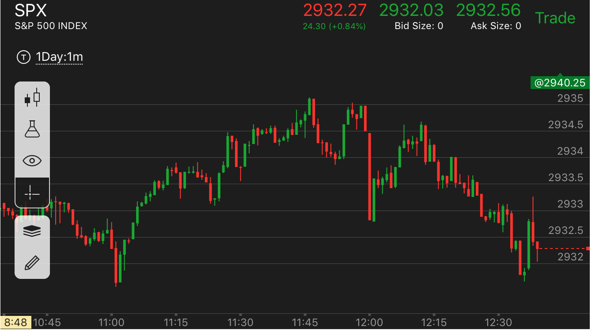
图示：11:45出现了第一段下跌。这个下跌一开始就速度很快。超过了它上涨的速度。所以不是真的下跌。但是11：50拉回涨幅的时候，速度更快。
只用了2分钟就拉回了前面用了4分钟的下跌幅度。说明这个要跌。12：00下跌速度太快了。它拉回的时候，出现了两段上涨走势。但是没有拉回全部涨幅。
这时不能认为它的速度慢就要超过顶点。这个应该只是填补真空。它开始下跌后，速度很慢。说明它一定低于12：00大跌的点。低于2933.
快速拉回全部幅度的调整走势
TOP
拉回全部跌幅或者涨幅，甚至短时间内创新高或者新低，要注意和
非常弱的两段走势，或者非常强的第一段走势区分开
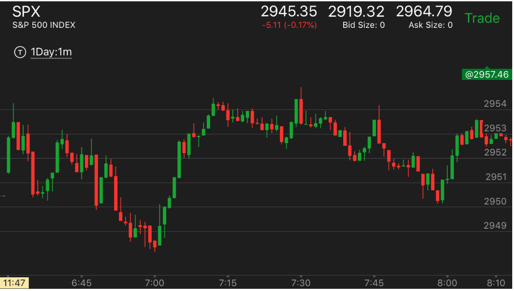
图示：开盘后，出现了跌势，然后出现了多个转折走势。是个底部的样子。
但是它的反弹很快，立刻拉回所有的跌幅。还短暂的超过了最高点。这时要仔细的区分。这个前面并不是两段走势。
而且它即使反转也不应该这么块。所以其实仍然处于跌势。
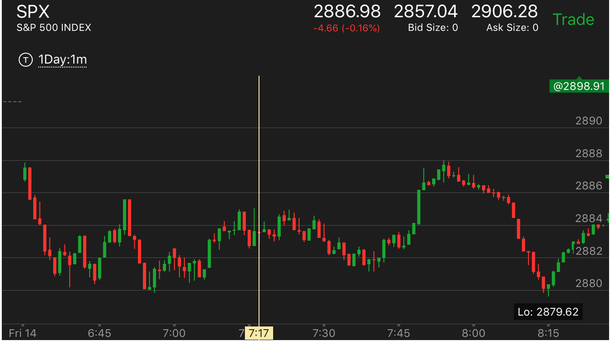
图示：开盘后，跌势出现了反转。成为了升势。7：50它快速下跌，一下的拉回所有的升幅。
还创了新低。但是这个不是跌势。因为它的升势只有一浪，仍然处于升势。只是回调幅度很大。这个的前面也不是两段走势。
很快跨越前面走平的点后，走平，未来一定会回来
TOP
跨越走平点后，如果立刻反弹，那么就不是这个走势，而是要继续下跌的走势。
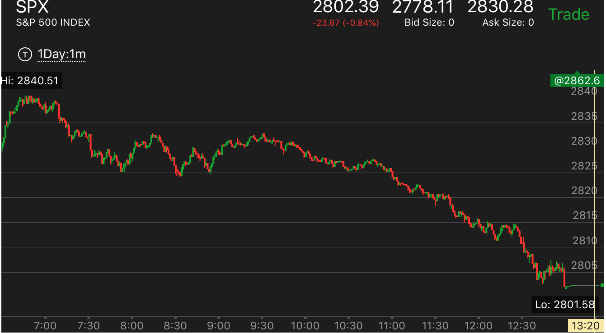
图示：7：50出现了多个转折下跌，它开始反弹，结果它的反弹太大了。很快就超过了前面走平的点。
到了高点后，它没有回调，反而稍微走平后，继续冲高。这样表示它会继续跌，不会继续上涨。应该做空。
而它8：20下跌的时候，跌的太快。所以会继续反弹。而它下跌的时候，创新低。说明它没有到底。9：20到达高点后，开始缓慢下跌。这样可以预计它
会远远低于前面的低点。
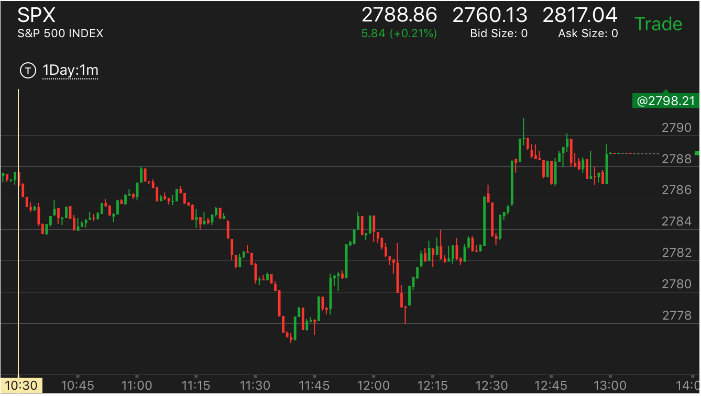
图示：11：50反转后，快速上涨，似乎要速度太快了。结果它下跌的速度更快。而且幅度很大。几乎完全回调回去了。
而且是从高点一下下来的，中间没有停顿。说明这个是填补真空，而不是下跌走势。12：10它立刻反弹，然后缓慢上涨，超过了前面的高点。
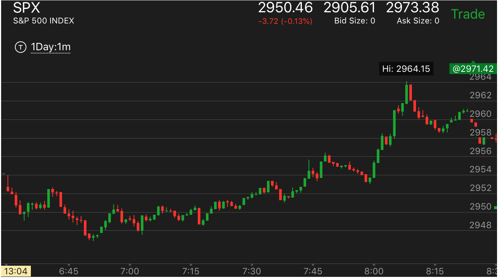
图示：开盘后下跌，走平，冲高后，快速下跌，可以看到它下跌的时候，越过了走平点，
慢慢下跌后，加速走低，然后在底部走平。这样就确定了这个是跨越走势。同时它也是一个两段下跌走势，一定会反弹的。
同时也可以看到它的开盘点，也就是下跌的开始是2954.它上涨的时候，不断在这个2954点徘徊。最后大涨前，先回落
到2954，然后暴涨。这个和另外一个走势非常接近。也是在一个点反复震荡。所以一定要注意关键点。

图示：11:20它上涨的时候，快速越过前面的高点。然后出现了多个转折走势。
这样说明它一定会下跌回来。

图示：10：30上涨后，走平很久，然后冲高，冲高后，立刻下跌。越过了走平点，然后一直走平。
这样可以想象，它一定会超过原来的高点,2956.
非常弱的两段走势
TOP
很弱的两段走势，也预示着很强的反向走势

图示：开盘后，两段上涨。第二段很弱。创新高后，没有停留，立刻下来。
创新低，然后出现了一个反常两段下跌后，反弹。填补一部分真空后。继续大跌。
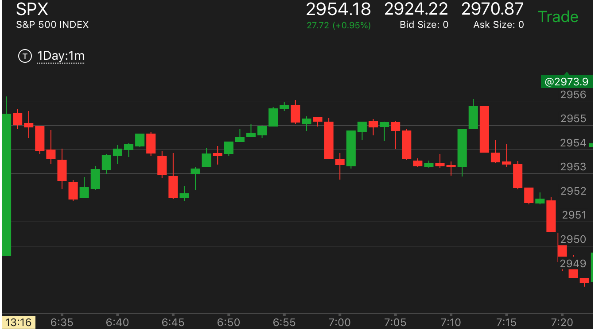
图示：6：45下跌两段走势结束。开始上涨，它上涨后，回调。7：10出现了上涨的第二段。可以看到。这个第二段
没有创新高。只是快速上涨后。立刻快速拉回。越过了第一浪的起始点。形成了下跌的第一浪。这个第一浪很强，表示这个下跌走势，不会轻易结束。

图示：开盘后，先向下，然后上涨。这样就是第一浪。快速返回后，再次上涨。没有新高。但是回到高点，一直走平。这样就是一个两段走势了。它的顶部不是很平。
但是震荡时间长。所以也构成了一个顶部。这个没有新高。只是接近新高。属于很弱的两段上涨。它走平后大跌。速度很快。说明是个很强的跌势。

图示：这个发生在刚刚开盘，属于很弱的两段上涨。没有新高，下跌幅度很大。说明是个很强的第一浪下跌。不会轻易结束。
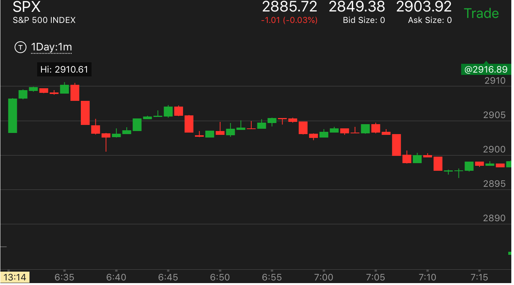
图示：开盘出现了两段走势。结果在高点没有停留一分钟，就立刻下跌了。虽然它创了新高。但是因为没有停留。所以也属于很弱的两段上涨。
快速运动的时候，寻找顶部或者底部
TOP
图示：7:46冲高后，立刻下跌，它下来后，没有反弹，而是继续走低，成为一个两段走势。这样就不是一个顶部。
8：00快速上涨。8：05出现了一个红色的bar。但是它的下一个bar高度一样。这样就不算加速。而8：08出现一个很小的红色bar。而它的绿色bar高度比
它高。这样就成为加速了。这样就是一个反转了。

图示：9：00开始的快速下跌。9：10一个反弹，它的下跌也很小。这样不是加速。而9：15反弹后，下跌很大。这样就是加速了。
它一开始反弹，就应该立刻追高买入。
头部的相对运动速度预示着未来的走势
TOP

图示：7:40到了高点后，快速下跌。然后再次回到原位。再次快速下跌。但是可以观察到，8：05的快速下跌
比7：40的下跌速度要慢很多。它没有跌倒前面的高点就开始反弹了。说明要大跌了。

图示：6：50从高点下跌，然后再次冲高。回到原位。走平后，7：05快速下跌。可以看到。这次的下跌比7：50的下跌快的多。
而且在底部稍微反弹一分钟后，继续走低。说明它的速度确实比前面快速。根据相对论，它一定会大涨。超过前面的高点的。7：20它出现了一个很小的向下加速走势。
就是说它上涨，然后下跌，跌回全部走势，然后再底部停留一分钟。这样就完成了加速。
表示下跌的速度超过了上涨的速度。而7：50则出现了上涨的速度超过了下跌的速度。形成了反转。
下跌后，倾斜向上，没有走平的时间,不能算加速
TOP

图示：开盘后，6：45出现了回调，然后上涨跨越。它的速度勉强可以算加速上涨。然后再高点停留了2分钟。
开始大跌。
1. 6:48出现了第一浪下跌。这个很关键。如果不知道是第一浪。这个很容易被认为是回调回到原位。因为它下跌的速度超过了上涨的速度。
但是也可以认为它不是，因它再低处没有停留，立刻上涨。
2. 6：58它快速下跌。它的下跌速度超过了上涨速度。但是这种倾斜向上的走势，不能算回调，只有向上，走平，呈现一个弯曲的样子，才是回调走势。否则不是。
走平后运动不能算作加速运动，只会持续运动。
TOP

图示：6:45和6：48都出现了走平上涨，再次走平，上涨的走势。这样的走势不会反转。走平上涨不是一个加速走势。
它没有可以比较的参照物。
相对运动来判断走势转折
TOP
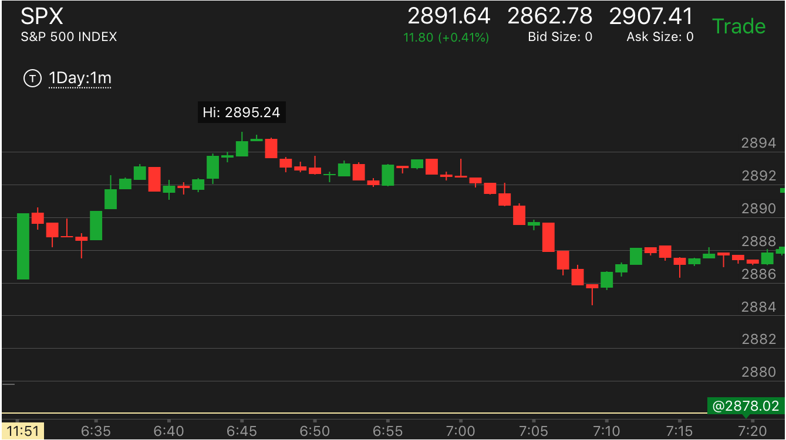
图示：开盘冲高，缓慢下跌后，再次冲高。可以看到6：35的冲高速度很大。超过下跌的速度。这样就是一个加速。它冲高后，没有立刻回调，而是不断的走高。
这样表示确实是真的加速走势。它在6：38下来，速度很快。说明这个不是一个顶部。再次加速冲高。这样两次发生后，一定就是一个顶部了。
图示：走低后，反弹，再次下来。它在6：40下跌的速度比上涨的速度要块。说明要涨。而它上涨后，6：48下跌的速度再次超过了上涨的速度。这个都表示要涨。
而且未来一定超过86这个点。
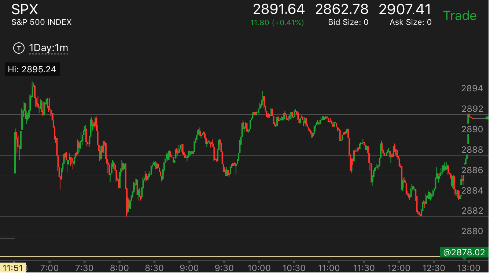
图示：
1. 8：00上涨后，下跌速度很快。远远超过了上涨速度，而且它在底部停留了3分钟。这样就坐实了它加速的走势。一定就是 底部了。要反转，一定要发生一个反向的加速走势才可以。
2. 11：10和11：30发生的下跌，都是反弹很大，而且立刻反弹，没有在底部停留。这样的加速不能算加速走势。12：10发生的加速下跌，是真正的加速下跌。它下跌速度远远超过了上涨的速度，而且在底部停留。
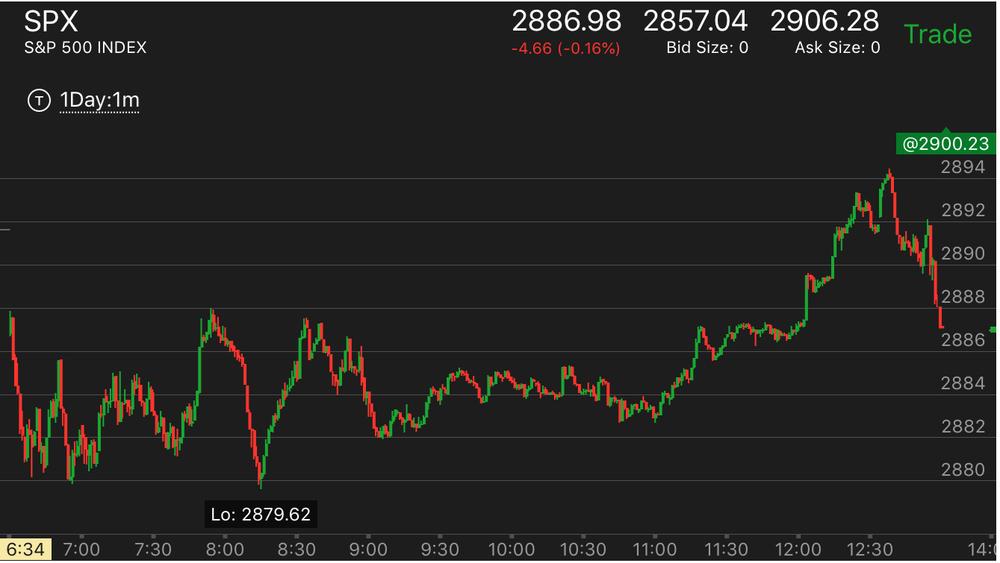
图示：
1. 11：20出现了加速，但是它在突破前面的高点的时候，是缓慢的突破。所以不是一个加速走势。
2. 12：05和12：15出现的加速，也是如此，它先缓慢的突破了前面的高点，然后大幅加速。这样的走势不会反转。会继续前进。
3. 12：30出现的加速就不一样。它从低点快速上涨。上涨的速度超过了下跌，然后很快突破高点。这样就是一个加速，一旦它走平。那么久可以做空。
不同层级的相对运动混合运动
TOP
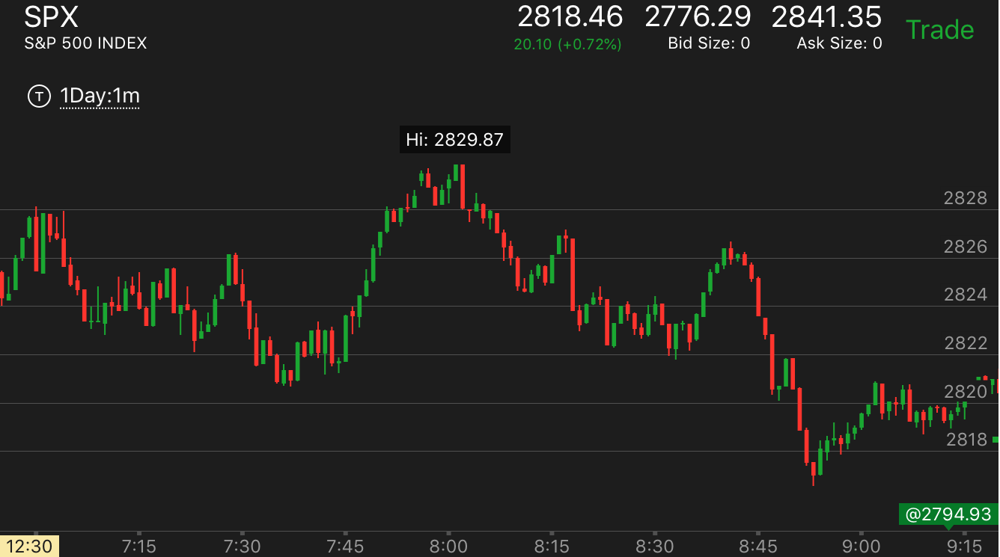
图示：
- 7:35出现底部加速后，一开始涨幅很小，然后走平。这样意味着，它会超过2826这个下跌的起始点。它果然连续大涨。
- 在顶部加速后。开始返回。8：00开始下跌的时候，它先下跌，然后反弹。这样，一定会跌破2822这个连续上涨的起始点。
- 8：15它大跌，然后在底部走平很久。这样就形成了一个底部。它反弹的时候，没有铺垫，是从底部直接反弹。这样它最多可以到达2826这个下跌的起始点。
它果然到了2826.然后大跌。
- 不同的层级的互相配合，形成了一个古怪的走势。每个层级都受到更大层级的影响，而走出相应的走势。
开始运动快，然后走平很长时间，总的看运动很慢
TOP

图示：11：15开始的下跌速度很快，而且分为两段。这样的走势应该不是主要走势。然而，它走平很久。几乎有45分钟。
这样平均来看，下跌的速度很慢。这样就成了一个主要走势。跌幅应该更大。另外11：30不是一个典型的底部走势。所以也不对。这样走平结束后，大跌。
这样的快速下跌是为了跨越。然后走平很久，为了积蓄力量。也是一个主要走势应该有的样子。

图示：11：05开始下跌，相比它上涨的速度，并不慢。然而它走平了很长时间，从11：10到11：25.这样平均来看，下跌速度很慢。
这样就是要大跌的预兆。加上前面的两段走势已经结束。11：45大跌后。其实只是第一段下跌。但是因为没有时间，或者前面跌的太厉害了。所以不继续下跌，但是也不会反弹。
最后收盘还收盘在低点。
相对幅度理论
TOP
- 这个走势在开盘的时候，或者一个走势根基不深的时候。可以判断走势的反转
- 如果明显在逆势，但是出现了这个形状，那么会有比较大的回调。
- 可以预测一个走势的幅度，如果一个走势的起步很弱，而前面的反弹起步很强，可以依照前面的反弹，预测它一定会超过这个点。
开盘应用相对强弱走势

图示：开盘后，冲高，然后下跌，立刻回到原位，这个就是一个相对论。一旦下跌反转，至少回到这个点。它下跌很快出现了两段走势。
7：00开始反转上涨，很快回到了开盘高点。而从跌势考虑，它开盘冲高后，被全部拉回。这次再次冲高，肯定也会大跌。如果跌的速度比较慢，只会比原来更低。
7：15 开始的下跌，时间更长，跌的也更低。8：00才跌倒底部，出现了两段跌势。然后再次反转。如果升的时间更长。它应该比原来的高点更高。
这样震荡幅度不断扩大。每个走势都比原来的时间更长，而运动幅度也更大。

图示：
1.开盘后，走低，然后冲高，然后再次快速走低。虽然下跌时间长。但是它走低的速度和幅度都很大。这样可以考虑，它未来一定至少回到高点。
2. 它最后上涨前，7：20走出了一个三段下跌走势.这样开始反转了。

图示：开盘后，不断冲高，出现顶部。开始下跌，处于跌势。注意在没有到头的情况下，7：45它冲高，创新高，然后开始大跌。
一方面大盘处于跌势，一定要跌到底，另外一方面，大盘一定会涨回原来的位置，至少接近原来的位置。它最后用了一天的时间去涨回原来的位置。

图示：开盘后不断下跌。然后反弹。可以看到它的反弹速度比下跌还要快。所以一旦反弹回到原位。
就开始下跌。

图示：开盘后，走平，快速下跌。然后反弹。反弹速度很慢。说明应该超过下跌点。然而到了开盘点后，它立刻下来，走平几分钟。
这样就奠定了大涨的基础。因为它本来就应该超过前面高点，而它到了高点后，又立刻回撤走平。这样就更加积蓄了力量。
相对强弱造成走势反转

图示：
开盘处于跌势，7：15的下跌，造成7：30大的反弹。然后7：38开的大跌，跌幅更大，时间更短。考虑一下。前面那么小的跌都反弹那么大。
那么这个更会反弹了。另外这个也是两段走势的第二段。而且它的反弹开始很小，说明未来一定反弹的幅度一定超过前面反弹的幅度。
逆势中出现相对强弱，造成较大的回调

图示：
10：00开始的下跌，和前面的下跌比较，速度块，幅度大。说明未来会有比较大的的反弹。
第二段下跌中出现较大的反弹，这样预示着转折点

图示：注意8：30开始的反弹，它的反弹到了前面的高点一样。
比前面的反弹高点要高。大跌后。可以分析。前面的反弹这么强，这样的大跌，一定比前面的高点
更高。它的反弹开始也很软弱。更加意味着要大涨。考虑到这个是第二段跌势，意味着跌势的结束。
第一段升势开始了。

图示：10:30分，大涨。然后迅速下跌。可以看到它下跌的速度很快。
可以想到它前面都反转了。这个更加会反转。这里下跌的速度至关重要。一定要快于大反弹之前的走势。不然就不一定是相对论走势了。
它下跌后，反弹很小，再次走低。这个就是底部加速了。这样综合起来。它未来一定会超过大反弹的点。
下跌的时候出现疑似双底，用相对论分析，不会成功

图示：注意7：45的双底。这个双底不会成功，
因为从7：00开始的下跌幅度很大。这次下跌，就分成两段。跌幅只会更大。
上涨的时候，一开始速度太快，拉回后，缓慢，可以预料会超过前面高点

图示：10：15出现大涨，很快就被拉回。然后缓慢上涨。可以预料一定超过
前面的高点。10：40再次快速大涨，再次拉回。然后缓慢上涨。可以预料一定超过前面高点。
反向走势是一个两段上涨走势，结束后大跌

图示：
1. 开盘后，缓慢走低，其实处于跌势。注意看6：55的时候，它冲高，然后立刻被拉回全部升幅，还更低。
开始快速上涨。这个上涨是一个两段上涨走势。可以分析出来。前面的很小的升幅，都被这样拉的更低，
这样的大涨。更加被拉低。何况这个是个两段上涨走势。恰好为大跌做好准备。它一定至少比前面的低点更低。